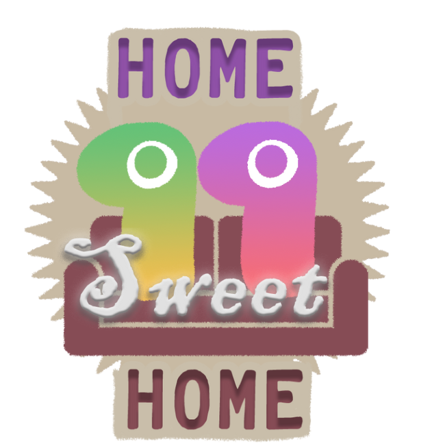

Disco Gecko
End of year project - UNITY - Computer - 2024 (3 months)
Presentation of the project

I worked on "Disco Gecko" during my Master 1 at CNAM ENJMIN. It’s a 2-versus-2 online party game set in a procedurally generated jungle nightclub, where you must find your teammate before the other team does.
The development spanned three months, during which I also attended to my courses and developed a second end of year project "Dans Les Pas De Mïa" . The objective of these final Master 1 projects was to create a unique 10-minute experience in a team of students with different specializations.
The team
Features
For this game I programmed all the procedural generation system along with a tool to preview it. I also implemented the team creation feature and character customization, and I made a tool for our User Researcher to visualize game replays.
Procedural generation
As I was working simultaneously on another project as well as attending to my courses, I mainly focused on the procedural generation for this game.
The game’s levels are procedurally generated using the Poisson Disk Sampling algorithm, which allows to place samples (or points) at a set distance from each other’s. To adapt it to the game, I added the possibility to choose the number of points we want to generate but also layers of generations with customizable combination methods.
The tool is split into two parts :
- The first part is used to generate points with specified parameters and preview them. (Early demonstration video made for the team)
- The second part uses these parameters to spawn prefabs on a map. It also contains additional controls for monitoring the layer dependencies and the randomization of spawned prefabs. (Early demonstration video made for the team)
This experience taught me how different debugging tools can be compared to development tools that are intended for Game Designers. The latter should be considered from the beginning with considerations of their usability and maintenance over time.
Links
Oral presentation: https://www.youtube.com/live/WrWi6q5Qd64?t=1274sItch.io page : https://aurore-be.itch.io/disco-gecko